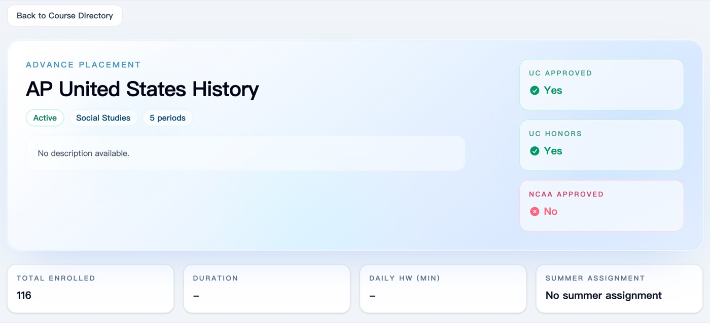
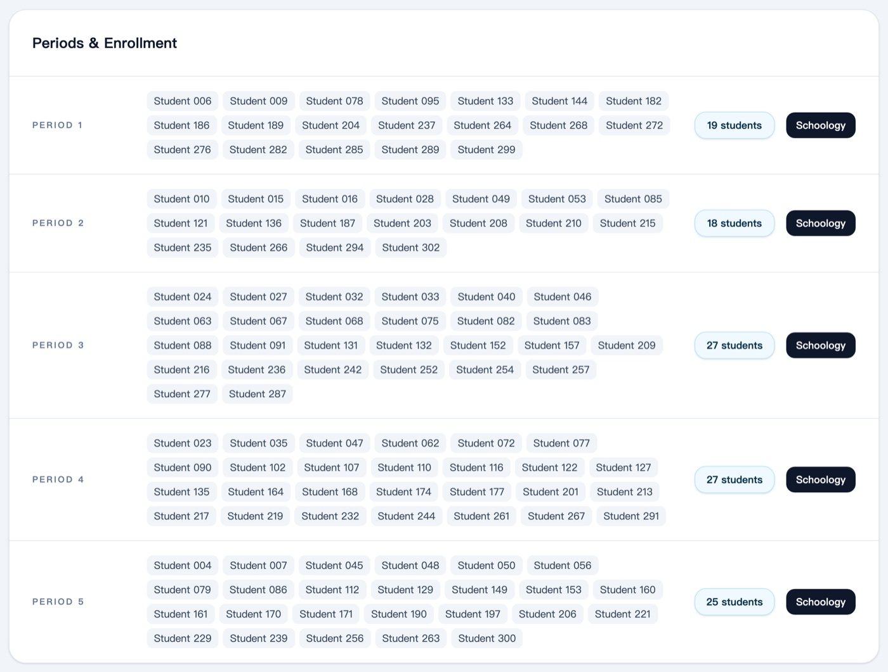
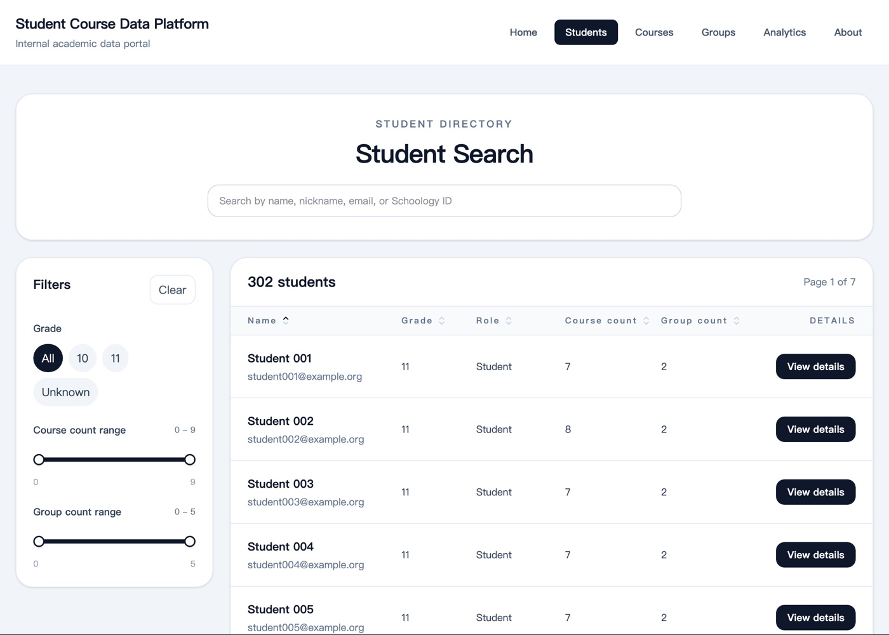

Student Course Data Platform
A course catalog and student search I built with React and TypeScript, using Schoology data from my grade: 302 students, 260 class sections, and 2,401 enrollments.
Pictured: the course catalog. Every name and email in these screenshots has been replaced, and the real data stays private.



